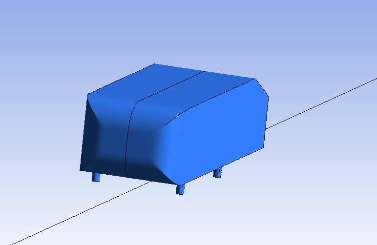
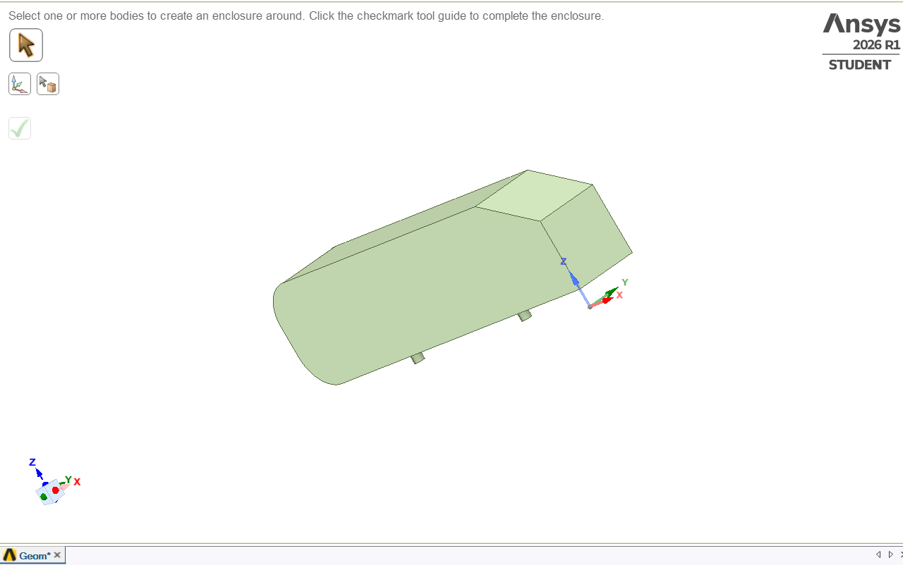
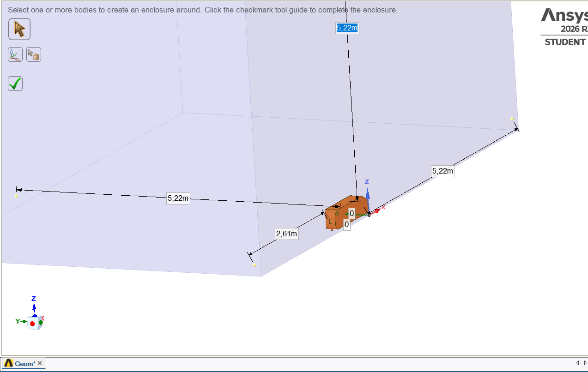
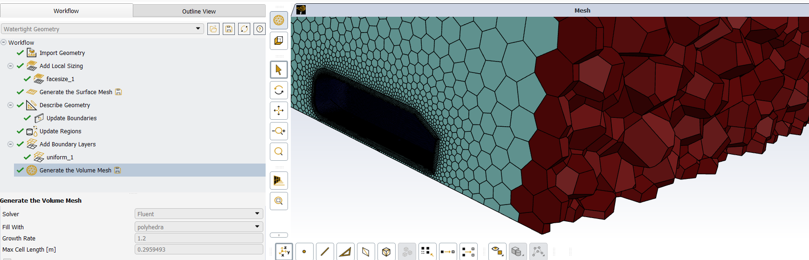
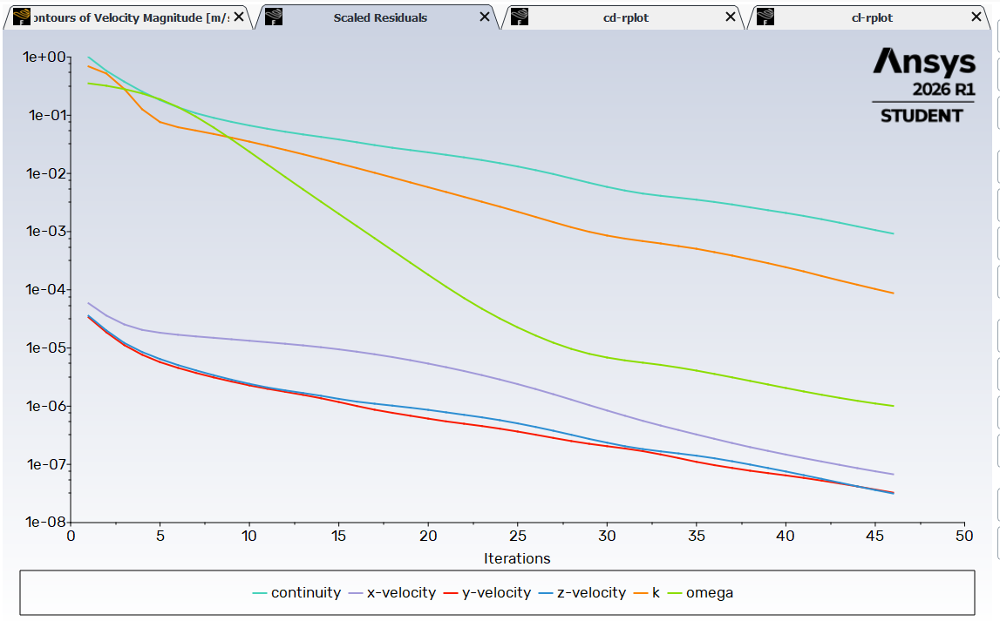

1. Introduction and Objective
The aim of this project is to simulate the turbulent flow around the Ahmed body, a standard benchmark in vehicle aerodynamics, using ANSYS Fluent. The flow is simulated at 40 m/s in a 3D domain with a symmetry plane. The objective is to analyze the pressure distribution, the velocity field and the wake structure behind the body, to compute the drag coefficient and to check the near-wall mesh quality with the y+ distribution.

2. Geometry and Fluid Domain
The study uses the Ahmed body, a simplified car shape widely used to study the wake and the drag of road vehicles. Only half of the body is modeled, and a symmetry plane is used to represent the other half, which reduces the size of the mesh and the computation time.
The fluid domain around the body has the following dimensions:


3. Meshing in Fluent Meshing
The geometry was imported in Fluent Meshing. A local sizing was applied on the wall of the body to refine the mesh where the flow is most sensitive. The surface mesh was generated first, followed by the volume mesh.


4. Setup in ANSYS Fluent
Turbulence Model and Fluid
The turbulence is modeled with the k-omega GEKO model, with its default parameters. The fluid is air with the following properties:
Boundary Conditions
| Boundary | Condition |
|---|---|
| Inlet (front, top and side) | Velocity inlet, 40 m/s along the flow direction (x) |
| Outlet | Pressure outlet |
| Ground | Wall |
| Body | Wall |
| Symmetry plane | Symmetry |
Solution and Initialization
The residual convergence criterion was set to 10⁻³. The solution
was first initialized with the standard initialization. The
command solve/initialize/fmg -y was then used in the
Fluent console to obtain a better initial solution before running
the calculation.
5. Convergence


6. Results
Drag Coefficient
| Quantity | Value |
|---|---|
| Drag coefficient (Cd) |
Pressure and Velocity Fields


Streamlines and Wake Region

7. Mesh Quality: y+ Distribution

8. Conclusion and Limitations
This project presented the main steps of a CFD simulation of an external flow: definition of the fluid domain, meshing in Fluent Meshing, setup in ANSYS Fluent, and post-processing of the pressure and velocity fields, the wake and the drag coefficient.
The study has some limitations: a single mesh was used (no mesh convergence study), the residual criterion was set to 10⁻³, and no comparison with experimental data has been made yet. These points are planned improvements.
← Back to Projects